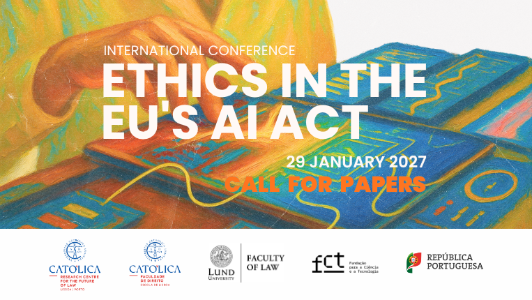
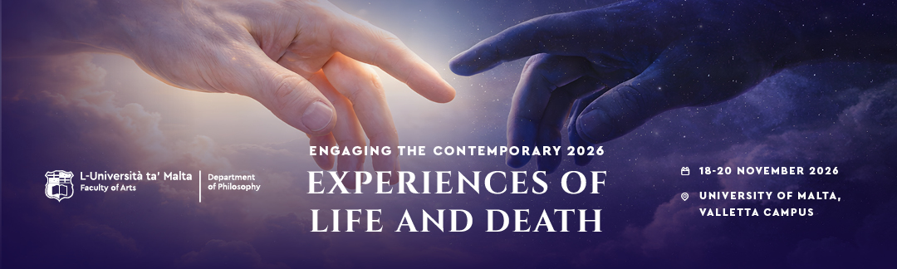
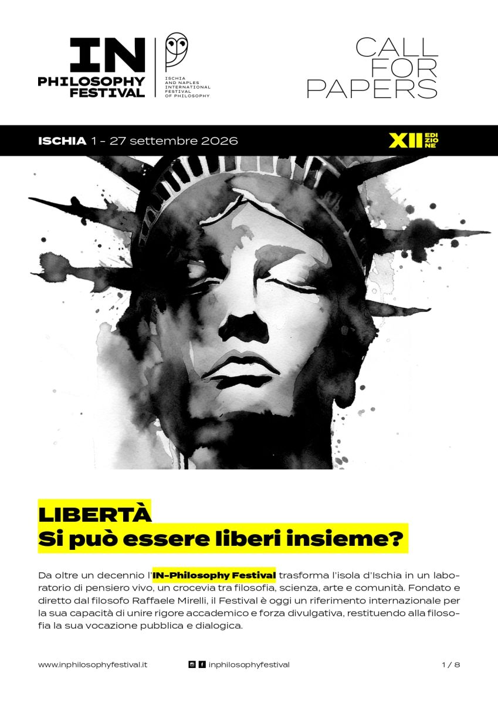

Language & computation
The ontological status of generated utterances; statistical prediction, meaning and the grounds of discourse.
The Living Being with Calculated Logos
A space for philosophical inquiry into language, computation, and the conditions under which knowledge claims acquire meaning and validity.
Philosophy · Technology · Forms of knowledge
Explore MDBR ↓MDBR is an independent research initiative devoted to fundamental questions at the intersection of philosophy, language and technology. Its starting point is that technical systems change not only what we can do, but also what counts as an explanation, a judgment or a reason.
Rather than treating philosophy as an afterthought to innovation, MDBR develops conceptual inquiries that begin with the assumptions embedded in models, measures and methods. It seeks conversations across disciplines, without reducing philosophical problems to technical ones.
The ontological status of generated utterances; statistical prediction, meaning and the grounds of discourse.
The distinction between causal production, reasons for truth and the responsibility of judgment.
What happens when values, ends and principles become metrics, weights and optimisation targets?
The relation between conceptual thought, technical design and the material conditions of making.

Image: Universidade Católica Portuguesa2nd International Conference · Universidade Católica Portuguesa, Faculty of Law, Lisbon
Regulation Without the Regulated? The Implicit Ontology of the AI Act

Visual: University of MaltaExperiences of Life and Death · Department of Philosophy, University of Malta
After Prometheus: Power, Residual Life, and the Fate of the Human

Poster: IN-Philosophy Festival / SFILibertà. Si può essere liberi insieme? · Villa La Colombaia, Forio
Molte sono le cose terribili. Libertà, potere e fragilità nell’umano
Molte sono le cose terribili. Libertà, potere e fragilità nell’umano
Antonio AlbaneseAntonio Albanese is an independent researcher with an interdisciplinary education in theoretical philosophy and civil engineering. He graduated with honours in theoretical philosophy from the University of Naples Federico II.
His research addresses the ontological and epistemological implications of contemporary computation, with particular attention to language models, the principle of reason, and the relation between technical criteria and normative judgment.
For scholarly correspondence, invitations and possible collaborations.